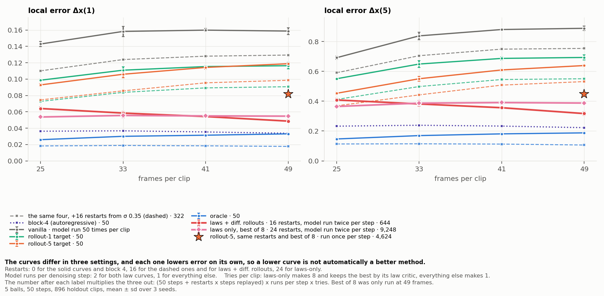

Vanilla bidirectional DiT
Open video ↗Rollout-5 ↓1.4111Original repo metric
Rollout-1 ↓0.4316Original repo metric
Scorable Rollout-5 pairs: 55/220
Theory and experiments
What denoising steps can compute,
and what our video experiments show.
Overview
The four experiments run in sequence. 01 is the derivation that sets up what they test, not an experiment.
Every section below starts collapsed: use the toggle beside its heading, or these buttons.
01 / The argument
For us to say that the denoising loop of \(T\) steps provides “serial computation,” we would need to show that allowing \(T\) to grow enlarges the class of problems the model can solve beyond what constant \(T\) can solve. Here, “constant” means independent of input size, with the same limits on the computation in each score evaluation.
SSH’s claim is that, under its assumptions, including the low-score-error condition at a fixed step budget, the tasks in question can already be solved with some constant \(T^*\). Allowing \(T\) to grow then adds no new class of solvable problems. This is the sense in which “the denoising loop does not provide scalable serial computation.” SSH refers to The Serial Scaling Hypothesis.
Let \(c\) be the conditioning frames and \(y^*=f(c)\) the unique correct future video. At an intermediate noise level \(t_k\), with \(\alpha_k,\sigma_k>0\),
The exact conditional score is
Therefore, the Tweedie-denoised estimate is
This holds for every \(x_k\). Even with different noisy states at different noise scales, the exact score always gives \(x_k\to f(c)\). Therefore,
This is the Jacobian of the clean-video estimate with respect to the current noisy state. Once conditioning \(c\) is fixed, changing \(x_k\) does not change the predicted future. The current state is irrelevant to the current clean estimate. More importantly, information carried through the denoising state from any earlier step cannot affect any later clean prediction. Every score evaluation, followed by the Tweedie formula, independently outputs the complete future \(f(c)\).
Information can propagate through the trajectory, but there is no path by which that propagated information can influence the computed solution \(f(c)\).
where \(e_k\) is the score error. The Tweedie-denoised estimate becomes
with \(\lambda_k=\sigma_k^2/\alpha_k\). Like the score, \(e_k\) is a vector field: it assigns a vector to each point in latent or video space. It depends on the noisy state \(x_k\) and contributes to the next denoising step. This provides a channel for recurrence.
As before, we can express this with the Jacobian:
If \(\partial e_k/\partial x_k\ne0\), information written into \(x_k\) by earlier steps can affect the computation at this step.
An even more directly relevant object is the Jacobian of a single sampler step. For a numerical reverse-SDE update,
Holding the conditioning and sampled noise \(\xi_k\) fixed,
Since \(s_k^\theta=s_k^*+e_k\),
The last term, \(b_k\,\partial e_k/\partial x_k\), is the part introduced by score error. Across several sampler steps, these state Jacobians multiply, just as in an RNN:
In the perfect-score case, the Jacobians between denoising states can still be nonzero. For a later step \(j<k\),
The state-to-state Jacobian \(\partial x_j/\partial x_k\) can be nonzero, but the clean estimate’s Jacobian is zero. The result is zero regardless of how complicated the state-to-state dependence is.
This makes progress toward Amir’s question: “Why doesn’t composing score evaluations amount to serial computation?” With a perfect score, the state can carry information through the trajectory, but the map from the state to the task solution removes all dependence on that information.
This is where the low-score-error assumption enters. It would be useful to have a similar Jacobian argument for approximate scores, but low score error alone does not bound its derivative. Instead, SSH uses a convergence argument.
Let \(q_K(y\mid c)\) be the output distribution after \(K\) approximate-score sampling steps. In SSH’s formulation, the convergence bound has the form
Here \(C\) is a theorem constant and \(d_{\mathrm{int}}\) denotes the discrete intrinsic dimension in the bound. The two terms account for:
When the intrinsic-dimension term stays bounded as input size grows, we can choose a fixed \(K^*\) large enough to make the first term small. Increasing \(K\) also increases the score-error term in this bound, so \(\epsilon_{\mathrm{score}}\) must be small enough for their sum to remain below the required threshold.
The formal premise is that one constant \(K^*\) satisfies this error threshold for every input size, together with the paper’s network, sampler, and moment assumptions. SSH then derives a constant-depth solution to the task. See Theorem F.2 and its interpretation.
02 / Guidance
Autoregressive diffusion gives lower errors than vanilla bidirectional diffusion across the tested reverse-step counts. Clean-latent oracle guidance reveals how much the bidirectional sampler can improve when given the correct future.
Both models use the same conditioning, targets, step counts, and metrics. We test 10, 20, 50, 100, and 200 reverse steps. Results are averaged over seeds, with no checkpoint averaging.


Watch the same sample across methods
Choose a sample and a reverse-step count. Play, pause, and step through all five videos together. Every clip has 49 frames; playback follows the same frame position.
Loading the comparison…
Case 2 at 50 steps. Rollout-1 guidance produces missing, wrong-color, and extra balls. The stricter validity checks in “All metrics” score 19 of 220 ball/frame pairs.
Scores below each video use the repository’s original Rollout-5 and Rollout-1 metrics for the selected sample, seed 0. The plots above summarize the full holdout set across seeds 0–2.
Data behind the figures
Download the autoregressive results and the bidirectional evaluations used for penalized rollout-5.
03 / Rollout guidance
Both guides improve a tuned Case 2 generation. In the earlier five-video tests, every tested variant worsens both mean errors. Below, we compare results that share the same vanilla controls and identify the settings that differed.
Every result in this section uses this video setting. Rollout-1 and Rollout-5 name the physics horizon used to build the guidance target. We evaluate the finished videos with both original repository metrics; lower is better. Ball-validity counts are separate.
Same Case 2 generation ↓Same five-video controls ↓Tests without a matching comparison ↓
Comparison 1 · Single-video tuning
Both guides improve both original metrics on Case 2. The tuned Rollout-1 result has lower errors than the saved cap-50 Rollout-5 result. All three clips share the single-video tuning experiment’s vanilla control.
Shared settings: seed 0, 50 denoising steps, guidance at step indices 25–49, and up to 50 latent updates per active step. Both guides apply direct gradient updates without checking and undoing proposals.
00000/828.mp4 · 50 denoising steps · seed 0 · single-video tuning
Scorable Rollout-5 pairs: 55/220
Scorable Rollout-5 pairs: 220/220
Scorable Rollout-5 pairs: 204/220
Loading the three videos…
| Setting | Rollout-1 guidance | Rollout-5 guidance |
|---|---|---|
| Guidance strength | 0.70 → 0.20; final step set to 0.10 | 0.20 → 0.06 |
| How this output was selected | Lowest original errors among 21 final-batch variants | Selected for visual quality during the sweep; original Rollout-5 later measured 7.2% below vanilla |
| Tests on more videos with these settings | None | None |
The strengths were tuned separately. This comparison shows what the two saved configurations achieved on one generation; changing the guidance horizon was not the only difference. Only two final videos survive from the 60-run Rollout-5 sweep, so the original metric cannot rank all 60 settings.
How Rollout-1 guidance is calculated →Rollout-1 settings ↓Rollout-5 clip metrics ↓Ground-truth video ↗
Comparison 2 · Earlier five-video tests
The Rollout-1 pilot and all six late Rollout-5 variants reuse the same five vanilla videos, verified by file hashes. They share seed 0, 50 denoising steps, guidance at step indices 40–49, and up to 12 accepted updates per step. Each proposal tries strengths 0.1, 0.03, 0.01, and 0.003.
Every tested variant raises both mean errors. Vanilla scores 0.4253 on Rollout-1 and 1.4163 on Rollout-5. The Rollout-1 pilot scores 0.4332 / 1.5004; the Rollout-5 variants score 0.4522–0.4922 / 1.4540–1.5192.

| Choice | Rollout-1 pilot | Rollout-5 variants |
|---|---|---|
| Frames used for each update | Choose the frame to update with the largest current error | Combine losses from all five-frame windows for which ball positions and velocities can be estimated |
| Target | Encode a reference with one frame replaced by a one-step physics prediction | Encode a five-step physics reference, or use the latent change caused by that reference |
| Where the loss is measured | Latent slice for the chosen frame | Whole five-frame window or its endpoint |
| Ball detection | Earlier detector | Several detector versions; strict detection rejects windows starting from a frame with an extra ball |
These pilots accept an update only when their guidance score improves. The Case 2 runs above instead use direct updates and select the smallest error above a threshold. The two experiment stages therefore test different procedures.
In the plot, “direct target” means the encoded physics reference. “Delta” subtracts the change caused by encoding and decoding the current video. The separate ball-validity counts were produced by different tracker versions, so we compare the common original metrics here. Download the shared settings and each run’s configuration.
Additional evidence · Same video setting
The following experiments also use five balls and 49 frames. They test update budgets, more videos, or alternative targets, but do not provide a matched Rollout-1 versus Rollout-5 comparison.


For five balls and 49 frames, the initial physics-derived targets barely change original Rollout-5. The exact-future oracle lowers it by 34.92%.
| Latent correction | Original Rollout-5 improvement |
|---|---|
| Random correction of matched size | +0.16% |
| Encoded five-step physics target | +0.08% |
| Latent change caused by the physics target | +0.12% |
| Exact-future oracle | +34.92% |
896 videos per seed, seeds 0–2; percent improvements averaged over 50, 100, and 200 denoising steps. Positive values mean lower error. These initial physics targets use the evaluation’s exact initial state; the oracle uses the correct future. No corresponding Rollout-1 target was tested in this holdout experiment. Download this video setting’s data.
A matched test would change only the physics horizon, keeping the videos, starting noise, update rule, strength schedule, and update budget fixed. The saved experiments provide shared-control comparisons, but do not make that single change.
The archives document all tested settings. The full Rollout-5 report also includes other ball counts and video lengths; the comparison above is restricted to five balls and 49 frames. All videos shown here are saved experiment outputs.
04 / State diffusion
We retrained the billiards experiment from scratch on positions and velocities instead of video. The gap between one-pass and block-by-block generation reproduces at 1/30 of the parameters, with no VAE and no tracker anywhere in the loop.
The seriality-gap paper’s released checkpoints generate pixels, so every number they produce passes through a VAE encoder, a VAE decoder, and a ball tracker. Those stages carry their own error, and it is not separable from the model’s: the repository’s own check puts the local-error floor of that pipeline at 0.19 world units, which is close to the 1-ball values the paper reports. These models predict the state directly and the metric is exact to about 1e-6, so nothing is hidden under a floor. The datasets were also rebuilt: every clip comes from its own independent simulation, where the paper’s generator takes up to 1,000 overlapping clips from each of about twenty simulations, making dataset diversity a hidden variable along the clip-length axis the experiment measures. “The paper” below means the seriality-gap paper, not SSH. Source: experiments/statebench/RETRAIN_REPORT.md.
5 balls, held-out clip 0 · open video ↗
5 balls, held-out clip 1 · open video ↗
5 balls, held-out clip 2 · open video ↗
5 balls, held-out clip 3 · open video ↗
Checkpoints and settings for these clips: JSON ↓
1 ball, held-out clip 0 · open video ↗
1 ball, held-out clip 1 · open video ↗
1 ball, held-out clip 2 · open video ↗
1 ball, held-out clip 3 · open video ↗
Checkpoints and settings for these clips: JSON ↓
2 balls, held-out clip 0 · open video ↗
2 balls, held-out clip 1 · open video ↗
2 balls, held-out clip 2 · open video ↗
2 balls, held-out clip 3 · open video ↗
Checkpoints and settings for these clips: JSON ↓
3 balls, held-out clip 0 · open video ↗
3 balls, held-out clip 1 · open video ↗
3 balls, held-out clip 2 · open video ↗
3 balls, held-out clip 3 · open video ↗
Checkpoints and settings for these clips: JSON ↓
Balls of radius 0.7 collide elastically in a 10 × 10 box at 15 frames per second. The model sees only numbers: 49 frames × 5 balls × (x, y, vx, vy) = 980 values per clip. No pixels, no VAE, no tracker. It is a small transformer with one token per (frame, ball), 8 layers, width 256, 6.85M parameters, trained with flow matching.
Each dataset is built by the paper’s own generator: 400 frames simulated per seed, the first 200 discarded as burn-in, at most one accepted window kept per seed. Initial conditions, solver, window filters, collision-density limits, and the held-out collision-count quotas are the original code, unchanged.
| Set, every cell | Clips | Independent simulations |
|---|---|---|
| Training | 20,000 | 20,000 |
| Held-out | 1,024 | 1,024 |
The burn-in keeps the state distribution equal to the original data’s. First-frame ball speeds, 5 balls at 49 frames:
| Quantile | 5% | 25% | 50% | 75% | 95% |
|---|---|---|---|---|---|
| This data | 2.28 | 5.32 | 8.04 | 10.90 | 14.66 |
| Original data | 2.27 | 5.30 | 8.01 | 10.88 | 14.66 |
Without the burn-in every clip would start from a freshly sampled initial condition, where 100% of ball speeds lie in [8, 10] against 18% in equilibrated data. Held-out sets keep the original repository’s balancing across ball-ball collision counts; one ball has no ball-ball collisions and no balancing.

Global error Δx(GT) is the mean distance between generated and true ball centres over frames 5 to 48. Local error Δx(k) runs the exact simulator k frames forward from the generated frame t−k and compares it with the generated frame t, with velocities read off the generated positions by the paper’s finite-difference estimator.
The bidirectional model reaches 0.885 on the five-step local error. The block-4 model — the paper’s autoregressive scheme applied to states, 4 frames generated per block, earlier frames held fixed — reaches 0.223, four times more physically accurate, and also has the lower global error.

Left: the local error falls until about 20 steps and is flat from 20 to 200, the paper’s Observation 4. No number of denoising steps brings the bidirectional model near the block-4 model.
Right: the bidirectional model’s global error is lowest at 1 step and rises with more steps. One step returns roughly the conditional mean of all futures consistent with the given frames — close to the truth on average, but not a physically consistent trajectory. The global error therefore does not measure physical accuracy; the local error does.

The bidirectional model is accurate at the first generated frame and drifts to the level of unrelated positions in the box by about frame 30.
The 1-step curve lies below the 50-step curve, which looks backwards but is expected. One denoising step returns a blend of trajectories rather than any one of them; being the mean, it minimises squared distance to the truth while being physically wrong. Fifty steps return one physically consistent sample, and because the dynamics are chaotic a single valid future ends up as far from the true one as any other valid future.


The paper’s control removes the serial structure. Both models become far more accurate, and — the substantive point — the two architectures become nearly equal: 0.0300 bidirectional against 0.0229 block-4 at 49 frames, a ratio of 1.31. Global error agrees: 0.0434 against 0.0399.
That matches the paper’s Observation 2, which reports 0.246 and 0.220 for its two video models at one ball and 49 frames, a ratio of 1.12. The gap that exists at 5 balls does not exist at 1 ball.

5 balls: the bidirectional model degrades with clip length, 0.684 at 25 frames to 0.885 at 49, tracking the paper’s video curve (0.670 to 0.883). The block-4 model is flat at 0.223 to 0.239, as the paper’s autoregressive video model is flat at about 0.61. Observations 1 and 3 reproduce, at 1/30 of the parameters.
1 ball: both models are flat, and so is the gap between them. The bidirectional model goes from 0.0371 at 25 frames to 0.0300 at 49 — slightly down, not up. Clip length by itself is not what hurts one-pass generation; dependent collisions are.

Local five-step error, bidirectional models, mean over 3 seeds with the standard deviation across seeds:
| Balls | 25 frames | 33 frames | 41 frames | 49 frames | 25 → 49 |
|---|---|---|---|---|---|
| 1 | 0.0371 ±0.0017 | 0.0343 ±0.0004 | 0.0316 ±0.0003 | 0.0300 ±0.0001 | 0.81× |
| 2 | 0.1774 ±0.0030 | 0.2653 ±0.0043 | 0.2970 ±0.0120 | 0.3433 ±0.0081 | 1.94× |
| 3 | 0.3833 ±0.0184 | 0.5474 ±0.0160 | 0.6164 ±0.0145 | 0.6432 ±0.0086 | 1.68× |
| 5 | 0.6841 ±0.0095 | 0.8396 ±0.0291 | 0.8846 ±0.0156 | 0.8851 ±0.0156 | 1.29× |
Block-4 models, with the bidirectional-to-block-4 ratio in parentheses. The gap grows with clip length at 5 balls and is flat at 1 ball:
| Balls | 25 frames | 33 frames | 41 frames | 49 frames |
|---|---|---|---|---|
| 1 | 0.0320 ±0.0007 (1.16×) | 0.0272 ±0.0004 (1.26×) | 0.0258 ±0.0013 (1.23×) | 0.0229 ±0.0005 (1.31×) |
| 5 | 0.2326 ±0.0044 (2.94×) | 0.2388 ±0.0028 (3.52×) | 0.2332 ±0.0049 (3.79×) | 0.2226 ±0.0026 (3.98×) |
Total score RMSE from the score-error audit run on these checkpoints: 25,000-step weights, 1,024 held-out clips, 32 uniform noise levels, 8 noise draws, float32 with TF32 disabled. “Generated frames” is clip length minus the 5 conditioning frames.
| Balls | 20 generated frames | 28 | 36 | 44 |
|---|---|---|---|---|
| 1 | 19.13 ±0.60 | 23.15 ±0.22 | 25.91 ±0.53 | 27.91 ±0.47 |
| 2 | 52.50 ±0.34 | 62.81 ±0.56 | 71.35 ±0.77 | 77.59 ±0.07 |
| 3 | 65.56 ±0.59 | 80.99 ±0.68 | 91.72 ±0.33 | 98.15 ±0.43 |
| 5 | 87.68 ±1.24 | 103.28 ±2.02 | 112.24 ±2.10 | 120.39 ±1.17 |
The same audit, as mean squared score error per predicted number:
| Balls | 20 generated frames | 28 | 36 | 44 |
|---|---|---|---|---|
| 1 | 4.575 | 4.783 | 4.664 | 4.426 |
| 2 | 17.229 | 17.616 | 17.680 | 17.103 |
| 3 | 17.912 | 19.522 | 19.474 | 18.247 |
| 5 | 19.223 | 19.051 | 17.501 | 16.471 |
Per-number score error is flat or slightly declining with length at every ball count, one ball included. The total grows only because there are more numbers to predict. From 20 to 44 generated frames the output grows by a factor of 2.2, so a flat per-number error predicts √2.2 = 1.48× growth in the total; measured growth is 1.46× at 1 ball, 1.50× at 3 balls, and 1.37× at 5 balls.
This matters for the audit’s question. A total score error that grows as the square root of the output size, with no increase per number, is what a model whose per-number score error is fixed and positive produces on a larger output. It is not evidence of a length-dependent breakdown in score accuracy.
Denoising-step budgets of 1, 2, 4, 8, 16, 32, 64, and 128, shared initial-noise seed, all 1,024 held-out clips. Best mean local error over all tested budgets:
| Balls | 20 generated frames | 28 | 36 | 44 |
|---|---|---|---|---|
| 1 | 0.0338 | 0.0297 | 0.0273 | 0.0256 |
| 2 | 0.1755 | 0.2524 | 0.2972 | 0.3351 |
| 3 | 0.3895 | 0.5398 | 0.6252 | 0.6288 |
| 5 | 0.6837 | 0.8311 | 0.8926 | 0.8927 |
A successful global prediction has mean position error at most 0.1 world units; a successful local prediction has five-frame physics error at most 0.05. The 1-ball models meet both thresholds at a fixed budget that does not grow with length: 2 steps for the global criterion at every length, and 32 steps for the stricter local criterion at 28, 36, and 44 generated frames. The 20-frame case needs 128 steps for the local criterion, the one place a shorter clip is harder — its best mean local error, 0.0338, is also the worst of the four. No multi-ball cell reaches 90% on either criterion at any tested budget, and adding steps does not fix it.

| Frames per block | Local error Δx(5) | Global error Δx(GT) |
|---|---|---|
| 44 (bidirectional) | 0.8851 ±0.0156 | 2.928 |
| 22 | 0.7459 ±0.0158 | 2.793 |
| 11 | 0.4730 ±0.0214 | 2.600 |
| 4 | 0.2226 ±0.0026 | 2.358 |
| 1 | 0.1100 ±0.0044 | 2.115 |
Both metrics fall monotonically as blocks get finer — the paper’s Observation 3, with a much wider spread than in pixel space, where its models span 0.88 down to 0.61. Block-causal models are cheaper at inference than the bidirectional one only when blocks are large: block 1 costs 44 times as many model calls at the same number of denoising steps.
Block 1 also shows the step saturation: 0.401 at 1 denoising step, 0.133 at 5, 0.116 at 20, 0.115 at 50.

| Depth at width 256 | Local error | Width at depth 8 | Local error |
|---|---|---|---|
| 4 | 1.1566 ±0.0171 | 128 | 1.0824 ±0.0233 |
| 8 | 0.8851 ±0.0156 | 256 | 0.8851 ±0.0156 |
| 16 | 0.7646 ±0.0055 | 512 | 0.8492 ±0.0117 |
| 32 | 0.7171 ±0.0109 | — | — |
Depth gains keep coming to 32 layers but flatten (0.885 to 0.765 to 0.717), while width saturates almost immediately (0.885 to 0.849 for a 4× parameter increase). Depth buys more than width per parameter, the paper’s Observation 5.
No bidirectional model of any size tested approaches the block-4 model’s 0.223, let alone block 1’s 0.110. More layers do not substitute for generating in order.

| Model | Shift 1 | Shift 5 |
|---|---|---|
| Bidirectional | 0.8851 ±0.0156 | 1.0442 ±0.0115 |
| Block 4 | 0.2226 ±0.0026 | 0.2828 ±0.0023 |
Shift 5 makes both models worse and leaves the ordering and the size of the gap unchanged (3.98× against 3.69×). The schedule choice is not what produces the results above.

7 minutes for 1-ball bidirectional, 22 minutes for 5-ball bidirectional, 10 and 50 minutes for the corresponding block-4 models. Block-causal training is slower because the paper’s scheme doubles the sequence and needs an explicit attention mask, which prevents the fused attention kernel; at one ball the sequence is short enough that this costs almost nothing.
The original repository balances each held-out set across ball-ball collision counts. Under one clip per simulation, the rarest bin must be found by rejection sampling rather than harvested from a single collision-heavy simulation, and the cost varies enormously by cell.
The collision-count distribution has a geometric tail, so a short sample predicts the rare bins. 24,000 fresh simulations for the 2-ball 49-frame cell, 82 seconds on 8 cores:
| Ball-ball collisions | 4 | 5 | 6 | 7 | 8 |
|---|---|---|---|---|---|
| Accepted clips | 6,719 | 1,094 | 129 | 20 | 4 |
Consecutive ratios are near-constant at 0.140. Fitting on the well-populated bins and extrapolating:
| Collisions | Predicted rate | Simulations for a 171-clip bin |
|---|---|---|
| 7 | 7.5e-4 | 227,000 |
| 8 | 1.1e-4 | 1.6M |
| 9 | 1.5e-5 | 11.5M |
Checked against the live build: the model predicts about 119 clips in the 9-collision bin after 8.0M simulations; the build had about 100. Roughly 20% accurate, from 82 seconds of sampling.
A single-rate Poisson process would have a factorial tail, falling off much faster than this. A constant ratio is what a Poisson mixture gives: mixing over a Gamma-distributed rate yields a negative binomial, whose tail is geometric. Physically that fits, since how often two balls meet depends on their configuration, so the collision rate varies between simulations. This is an inference from the shape, not verified against the simulator.
| Cell | Simulations | Wall time |
|---|---|---|
| Any 1-ball cell | ~24,000 | 13 s |
| 5-ball, 49 frames | 23,000 | 4 min |
| 3-ball, 49 frames | 314,000 | 21 min |
| 2-ball, 41 frames | 1.0M | 33 min |
| 2-ball, 49 frames | ~11M | ~2.5 h |
Practical rule: before building a balanced cell, run about 25,000 simulations, fit the ratio on the bins with good counts, and extrapolate. A 6,000-simulation smoke test whose rarest bin has a single observation gives an unusable estimate.
Scope and data
102 training runs: bidirectional at 1, 2, 3, and 5 balls and block-4 at 1 and 5 balls, each at 25, 33, 41, and 49 frames with three seeds. 48 score audits, 48 sampling sweeps, and 384 physics evaluations on the bidirectional checkpoints. All 16 datasets rebuilt and validated. A further 30 runs cover the block-size, depth, width, and noise-schedule sweeps at 5 balls and 49 frames. Not rerun: depth 64 and width 1024, the two most expensive families, and the memorisation gates.
One row per training run: global error, one-step local error, and five-step local error at 50 denoising steps, read from each run’s saved evaluation. These are the numbers behind the horizon, ball-count, block-size, depth, width, and schedule results above. The score-error and sampling-accuracy tables come from the separate score-error audit.
05 / State-space guidance
One gradient step toward a physics target at every denoising step. In state space the guides that failed in pixels now work — they lower every error of the bidirectional model — but they shift the whole length curve down rather than flattening it. Guidance built from physics laws alone, plus restart sampling, does flatten it, and still lands above the block-4 model.
Every number here is on the 896 holdout clips — the 1,024 held-out clips minus 128 kept for calibration — as the mean ± standard deviation over 3 training seeds, using the retrained bidirectional state models from the previous section at 25,000 updates. Guidance strength is selected per (frames, steps, guide) on the calibration clips; the selected value is 1 in every main-grid cell except three 20-step cells, where it is 0.3. Source: experiments/statebench-guidance/REPORT.md.

| Δx(5), local error | 25f | 33f | 41f | 49f | 25→49 |
|---|---|---|---|---|---|
| bidirectional, vanilla | 0.691 ±0.011 | 0.838 ±0.025 | 0.880 ±0.006 | 0.888 ±0.014 | 1.28× |
| bidirectional, rollout-1 target | 0.550 ±0.005 | 0.649 ±0.023 | 0.687 ±0.011 | 0.693 ±0.017 | 1.26× |
| bidirectional, rollout-5 target | 0.453 ±0.008 | 0.550 ±0.017 | 0.609 ±0.008 | 0.639 ±0.009 | 1.41× |
| bidirectional, oracle | 0.147 ±0.005 | 0.170 ±0.007 | 0.181 ±0.006 | 0.188 ±0.002 | 1.28× |
| block-4, vanilla | 0.233 ±0.004 | 0.239 ±0.002 | 0.233 ±0.004 | 0.223 ±0.002 | 0.96× |
| Δx(1), local error | 25f | 33f | 41f | 49f | 25→49 |
|---|---|---|---|---|---|
| bidirectional, vanilla | 0.143 ±0.003 | 0.158 ±0.006 | 0.160 ±0.002 | 0.159 ±0.004 | 1.11× |
| bidirectional, rollout-1 target | 0.099 ±0.001 | 0.111 ±0.004 | 0.115 ±0.002 | 0.116 ±0.004 | 1.18× |
| bidirectional, rollout-5 target | 0.093 ±0.002 | 0.106 ±0.004 | 0.114 ±0.002 | 0.119 ±0.001 | 1.28× |
| bidirectional, oracle | 0.026 ±0.001 | 0.030 ±0.001 | 0.031 ±0.001 | 0.033 ±0.000 | 1.28× |
| block-4, vanilla | 0.036 ±0.001 | 0.037 ±0.000 | 0.035 ±0.001 | 0.034 ±0.001 | 0.93× |
| Δx(GT), global error | 25f | 33f | 41f | 49f | 25→49 |
|---|---|---|---|---|---|
| bidirectional, vanilla | 1.325 ±0.008 | 2.098 ±0.014 | 2.602 ±0.014 | 2.934 ±0.012 | 2.21× |
| bidirectional, rollout-1 target | 1.218 ±0.005 | 1.965 ±0.026 | 2.492 ±0.006 | 2.836 ±0.010 | 2.33× |
| bidirectional, rollout-5 target | 1.056 ±0.013 | 1.795 ±0.023 | 2.343 ±0.010 | 2.704 ±0.013 | 2.56× |
| bidirectional, oracle | 0.032 ±0.001 | 0.034 ±0.001 | 0.038 ±0.002 | 0.042 ±0.001 | 1.31× |
| block-4, vanilla | 0.792 ±0.008 | 1.455 ±0.008 | 1.988 ±0.013 | 2.358 ±0.017 | 2.98× |
In pixel space the same targets gave changes within ±2%, which the rollout-guidance section above documents. Here rollout-5 guidance lowers Δx(5) by 28% at 49 frames and 34% at 25 frames, and improves 84–87% of individual holdout clips when paired on the same initial noise. The pixel-space failure was a tracking problem, not a property of the guidance idea: with exact states there is nothing to detect.
The 25→49 growth of Δx(5) is 1.28× unguided, 1.26× with rollout-1 and 1.41× with rollout-5. The growth of the global error is unchanged or slightly steeper, 2.21× against 2.33–2.56×. Guidance shifts the whole curve down by a roughly constant factor. The block-4 model is flat at 0.96× and still 2.9× more accurate than the best guided bidirectional model at 49 frames.
0.119 against 0.116 at 49 frames, and it improves Δx(5) and Δx(GT) more. The five-frame target carries more information about where the ball should be than the one-frame target, whose source frame is itself only one frame away from the target.
The oracle receives the true future states. It is a positive control: it shows how far one gradient step per denoising step can move the sample. At 50 steps it takes the global error from 2.93 to 0.04 and the five-step local error from 0.888 to 0.188, below the block-4 model's 0.223. It also gains from more steps, which vanilla sampling does not:
| Δx(5) at 49 frames | 20 steps | 50 steps | 100 steps |
|---|---|---|---|
| vanilla | 0.900 | 0.888 | 0.886 |
| rollout-1 target | 0.766 | 0.693 | 0.687 |
| rollout-5 target | 0.699 | 0.639 | 0.622 |
| oracle | 0.390 | 0.188 | 0.123 |
At 100 steps the oracle's 25→49 growth is 1.08×. This matches the pixel-space clean-latent oracle, which also kept improving with steps while vanilla sampling did not. The guided steps are an iterative fit to a supplied answer; they do not compute the answer.

Below 0.3 the rollout guides do little; at 3 they start to hurt Δx(1); at 10 every guide is worse than no guidance on the local errors, the oracle included. The optimum is 1 for all three targets, and the same value is selected at every clip length and step count from 50 steps upward.
One change at a time from the main grid, 49 frames and 50 steps, with strength re-selected on the calibration clips.
| Variant | rollout-1: Δx(1) / Δx(5) | rollout-5: Δx(1) / Δx(5) | oracle: Δx(5) / Δx(GT) |
|---|---|---|---|
| main grid | 0.116 / 0.693 | 0.119 / 0.639 | 0.188 / 0.042 |
| source velocities from the paper's estimator instead of the model's | 0.113 / 0.661 | 0.120 / 0.611 | — |
| positions only in the loss | 0.113 / 0.735 | 0.133 / 0.744 | 0.448 / 0.090 |
| guidance only in the second half of the steps | 0.140 / 0.807 | 0.141 / 0.806 | 0.427 / 0.180 |
| gradient without the model Jacobian | 0.118 / 0.751 | 0.149 / 0.768 | 0.122 / 0.027 |
Clip 112, the median vanilla Δx(5) · open video ↗
Clip 157, the largest rollout-5 improvement · open video ↗
Clip 69, the largest rollout-5 deterioration · open video ↗
Watching the trails shows what the metrics measure. The vanilla panel produces balls that turn in mid-flight, pass through each other and leave the wall at the wrong angle. Rollout-5 guidance removes many of these, so its trails look like a plausible billiard trajectory, but by the end of the clip the balls are nowhere near their true positions: a physically consistent future that starts from slightly different collisions diverges from the true one within about 20 frames. The oracle panel follows the truth panel almost exactly. Block 4 produces a consistent trajectory that is also a different one.

At frame 5 every method sits on the truth. By frame 20 the vanilla and both guided runs have visibly separated, and by frame 36 the lines are as long as the box. Only the oracle keeps every disc inside its dashed circle, which is why it has no visible lines. Guidance shortens these lines a little but does not stop them growing.

The paper's two metrics compare two points in time. These ask what the simulator says about a generated trajectory as a whole, on the same trajectories as Figure 18 at 50 steps and strength 1. They fall into three groups: what the model's own velocity channel says, what the simulator says about the generated positions, and how far the sample is from the truth.
“Event” everywhere means what the paper's simulator reports when run for one frame interval from the generated frame t−1 with the generated positions and velocities. Because the true clips are exact simulator snapshots, the ground truth scores zero on every violation measure, which checks the definitions.

| 49 frames | ground truth | vanilla | rollout-1 | rollout-5 | oracle | block 4 |
|---|---|---|---|---|---|---|
| energy drift | 0.000 | 0.057 ±0.002 | 0.125 ±0.002 | 0.172 ±0.004 | 0.020 ±0.001 | 0.019 ±0.000 |
| speed change without ball contact | 0.000 | 0.030 ±0.002 | 0.044 ±0.002 | 0.054 ±0.001 | 0.011 ±0.001 | 0.007 ±0.000 |
| collision-law residual, ball–ball | 0.000 | 0.706 ±0.006 | 0.428 ±0.008 | 0.576 ±0.035 | 0.130 ±0.003 | 0.229 ±0.007 |
| collision-law residual, wall | 0.000 | 0.213 ±0.004 | 0.234 ±0.008 | 0.245 ±0.006 | 0.052 ±0.004 | 0.046 ±0.003 |
| phantom velocity-change rate | 0.000 | 0.067 ±0.004 | 0.105 ±0.005 | 0.136 ±0.007 | 0.017 ±0.000 | 0.014 ±0.000 |
| frames with overlapping balls | 0.000 | 0.140 ±0.011 | 0.079 ±0.011 | 0.071 ±0.004 | 0.004 ±0.001 | 0.008 ±0.001 |
| frames with a ball outside the box | 0.000 | 0.032 ±0.001 | 0.015 ±0.000 | 0.031 ±0.003 | 0.004 ±0.000 | 0.002 ±0.000 |
| position–velocity mismatch (units) | 0.000 | 0.019 ±0.001 | 0.030 ±0.001 | 0.036 ±0.001 | 0.011 ±0.000 | 0.008 ±0.000 |
| ball–ball collisions per clip | 15.1 | 25.0 | 18.9 | 15.4 | 15.1 | 14.7 |
| W1 distance, collision counts | 0.000 | 9.830 ±0.748 | 3.829 ±0.977 | 1.475 ±0.209 | 0.185 ±0.063 | 0.544 ±0.006 |
| W1 distance, speeds (units/s) | 0.000 | 0.231 ±0.004 | 1.345 ±0.043 | 1.715 ±0.034 | 0.060 ±0.001 | 0.109 ±0.016 |
| median frame of divergence from truth | 49 | 13 | 14 | 15 | 49 | 18 |
896 holdout clips, mean ± sd over 3 seeds. The Wasserstein-1 distance is the mean absolute difference between the quantile functions of the generated and true distributions.
On the position-based measures the guided models sit between vanilla and block 4: half as many overlapping frames, the ball–ball collision-law residual down from 0.71 to 0.43 with a rollout-1 target, and the collision-count distribution repaired — vanilla generates 25 collisions per clip against 15 in the data, and rollout-5 gives 15.4. On every velocity-based measure the guided models are worse than vanilla: energy drift 3×, phantom velocity changes 2×, speed-distribution distance 6×.

The rollout target's velocity at frame t is the simulator's velocity after running from the estimate's frame t−k. Early in sampling the estimate is a conditional mean whose velocities are averaged over many futures and therefore too small, and the target inherits and then enforces those small velocities. Neither local error catches this: the paper's re-estimates velocities from positions, and the generated-velocity variant only checks that a few frames are consistent with each other, which a trajectory that is too slow but self-consistent passes — both variants improve under rollout guidance. A conserved quantity tracked across the whole clip is what exposes it.
Vanilla's ball–ball collision-law residual is 0.71, meaning the velocity after a detected contact differs from the elastic-collision outcome by 71% of the incoming speed, against 0.13 for the oracle and 0.23 for block 4. Vanilla balls overlap in 14% of generated frames and leave the box in 3%; the oracle and block 4 do so in under 1%.


The measures above pick one physical quantity each. The complementary question is whether the generated clips, taken as whole objects, are distributed like true clips. Each clip's 44 generated frames are flattened into one vector — 440 position coordinates, 440 velocity coordinates, or both — in the model's standardized units, and compared with the truth three ways.
| 49 frames | ground truth | vanilla | rollout-1 | rollout-5 | oracle | block 4 |
|---|---|---|---|---|---|---|
| Fréchet distance, positions | 2.553 ±0.000 | 2.622 ±0.029 | 4.060 ±0.030 | 4.105 ±0.029 | 2.554 ±0.001 | 2.589 ±0.017 |
| Fréchet distance, velocities | 5.456 ±0.000 | 5.420 ±0.018 | 7.489 ±0.020 | 7.740 ±0.091 | 5.426 ±0.004 | 5.420 ±0.019 |
| Fréchet distance, both | 6.539 ±0.000 | 6.558 ±0.031 | 8.899 ±0.029 | 9.147 ±0.093 | 6.511 ±0.002 | 6.526 ±0.030 |
| Fréchet distance, both, top-32 PCs | 2.187 ±0.000 | 2.286 ±0.030 | 4.237 ±0.034 | 4.160 ±0.049 | 2.190 ±0.002 | 2.239 ±0.045 |
| sliced W2, positions | 0.0581 ±0.0002 | 0.0592 ±0.0017 | 0.0663 ±0.0013 | 0.0680 ±0.0023 | 0.0582 ±0.0003 | 0.0596 ±0.0005 |
| sliced W2, velocities | 0.0638 ±0.0006 | 0.0664 ±0.0004 | 0.1809 ±0.0034 | 0.2161 ±0.0029 | 0.0637 ±0.0005 | 0.0610 ±0.0009 |
| sliced W2, both | 0.0610 ±0.0004 | 0.0629 ±0.0003 | 0.1046 ±0.0017 | 0.1215 ±0.0025 | 0.0611 ±0.0004 | 0.0603 ±0.0006 |
| classifier accuracy, temporal CNN | 0.505 ±0.016 | 0.499 ±0.003 | 0.930 ±0.006 | 0.967 ±0.002 | 0.508 ±0.002 | 0.504 ±0.006 |
| classifier accuracy, gradient boosting | 0.514 ±0.004 | 0.545 ±0.010 | 0.931 ±0.003 | 0.967 ±0.004 | 0.512 ±0.003 | 0.509 ±0.004 |
| classifier accuracy, logistic regression | 0.511 ±0.006 | 0.500 ±0.011 | 0.542 ±0.016 | 0.534 ±0.005 | 0.505 ±0.003 | 0.496 ±0.007 |
Mean ± sd over 3 seeds, 49 frames. Distances in standardized units: positions divided by 2.5, velocities by 6.25.
Their Fréchet and sliced-W2 distances sit on the noise floor at every number of principal components, and the CNN and logistic regression score 50% against them. Gradient boosting reaches 54.5% on vanilla, the only trace of a signal. This is the same vanilla model that overlaps balls in 14% of its frames and collides 25 times per clip instead of 15. Those violations live in a few coordinates per frame — the distance between one pair of balls, the velocity jump at one contact — and change the marginal distribution of the 880 coordinates so little that a two-sample test on 896 clips does not see them.

The CNN tells rollout-1 and rollout-5 clips from true ones with 93% and 97% accuracy; sliced W2 on velocities is 3× the floor and on positions 1.15×. Logistic regression stays near 54%, so the difference is not a shift in the mean trajectory but in its shape.


In physics-feature space there are three islands: the truth alone, since every violation measure is exactly zero for it; the two rollout-guided models, with their low final energy; and a third island where vanilla forms its own blob next to a shared oracle-and-block-4 blob. In raw-coordinate space every method is the same featureless cloud. That matches the table: the raw coordinates do not carry the physics violations that the simulator-based measures detect.
The whole-trajectory distances therefore add one thing — a clean confirmation that the rollout-guided velocity drift is a distribution-level defect — and miss everything else. Comparing generated trajectories as a distribution needs a feature space in which the violations are large, and for this task those features are the physical measures, not the coordinates.
Everything above asks whether guidance can substitute for serial generation using targets the model computes for itself, and finds that they lower the error but leave the length dependence intact. This part replaces the targets with physics. A law is an algebraic relation between neighbouring frames of the clean estimate: conservation of energy, free flight with wall reflection, constraints at a contact, no overlaps, no crossings. Anything that integrates the dynamics forward, with or without gradients, is a rollout.
The bar was set in advance for both rounds: closer to the oracle than to the rollout targets on both local errors, meaning Δx(1) < 0.075 and Δx(5) < 0.41 at 49 frames and 50 steps.
Everything above, and the block-4 comparison, runs 50 denoising steps, applies its guidance correction once per step, and produces one clip per attempt. The law methods add restarts, a second model run per step, and repeated tries with the best one kept. All three lower error on their own, whatever the guidance is, so the law numbers cannot be read straight against the rest. Here is what each one runs:
| Method | Restarts | Model runs per denoising step | Tries per clip (best kept) | Total model runs per clip |
|---|---|---|---|---|
| vanilla, rollout-1, rollout-5, oracle; block 4 | 0 | 1 | 1 | 50 |
| the same four with restarts (dashed in Figure 34) | 16 from σ 0.35 | 1 | 1 | 322 |
| laws + differentiable rollouts (round 1) | 16 from σ 0.35 | 2 | 1 | 644 |
| rollout-5 given round 2's extra work, 49 frames only | 24 from σ 0.45 | 1 | 8 | 4,624 |
| laws only (round 2) | 24 from σ 0.45 | 2 | 8 | 9,248 |
The last column is the first three multiplied out: (50 steps + restarts × steps replayed) × runs per step × tries. A restart re-noises the clip back to σ and redoes every step from there, which is 17 steps at σ 0.35 and 22 at σ 0.45 — so laws-only is (50 + 24 × 22) × 2 × 8 = 9,248. Both law methods run the model twice per step where everything else runs it once, so each does double the guidance work of its closest comparison — including the rollout-5 run that otherwise matches laws-only exactly. Repeated tries were only ever run at 49 frames, so at 25, 33 and 41 frames there is nothing to compare laws-only against on that setting.

| 49 frames, 50 steps, holdout, 3 seeds | Δx(1) | Δx(5) | Δx(GT) |
|---|---|---|---|
| vanilla | 0.159 ±0.004 | 0.888 ±0.014 | 2.934 |
| rollout-1 target | 0.116 ±0.004 | 0.693 ±0.017 | 2.836 |
| rollout-5 target | 0.119 ±0.001 | 0.639 ±0.008 | 2.704 |
| oracle | 0.033 ±0.000 | 0.188 ±0.002 | 0.042 |
| rollout-5 target, 16 restarts | 0.099 ±0.003 | 0.531 ±0.011 | 2.548 |
| oracle, 16 restarts | 0.018 ±0.000 | 0.106 ±0.002 | 0.020 |
| block 4, vanilla | 0.034 ±0.001 | 0.223 ±0.002 | 2.358 |
| laws + differentiable rollouts 1–3, 16 restarts | 0.049 ±0.002 | 0.317 ±0.012 | 3.008 |
This clears the bar and, against references given the same restarts, is on the oracle side of both midpoints of 0.054 and 0.319. Three things decided it: sparse law gradients need a per-element bound rather than RMS scaling, and every law was harmful until then; a differentiable rollout beats the detached rollout target at the same horizon because the gradient can move the source frame, 0.668 against 0.744 at horizon 1; and restart sampling helps, 0.492 to 0.403 for the same laws at 4 restarts. But restarts are not selectively useful to law guidance: at 16 restarts they gain 0.14 for vanilla (0.888 to 0.754), 0.14 for rollout-1, 0.11 for rollout-5 and 0.08 for the oracle, so vanilla gains the most of any reference. The final configuration has no run without restarts, so its own restart gain is not measured. The method also uses rollouts, and it has the defect described below: its samples collide a third as often as the data.

Starting from the geometry laws alone at 0.654 without restarts, every velocity-based law that round 1 had rejected was retested under restart sampling, five new laws were written, and the update rule was varied — 12 local screens and 7 cluster iterations. Round 2's restart evidence is the table below rather than a figure: the geometry laws at 4, 16 and 48 restarts.
| 49 frames, 50 steps, holdout, 3 seeds | Δx(1) | Δx(5) | Δx(GT) | final energy |
|---|---|---|---|---|
| geometry laws, 4 restarts | 0.082 | 0.568 | 2.939 | 0.97 |
| geometry laws, 16 restarts, 2 inner corrections | 0.071 | 0.505 | 2.945 | 0.97 |
| geometry laws, 48 restarts, 2 inner corrections | 0.064 | 0.463 | 2.940 | 0.96 |
| geometry + faded late reflection, 24 restarts | 0.066 | 0.458 | 2.944 | 0.96 |
| the same, best of 8 candidates by the law critic | 0.055 ±0.000 | 0.388 ±0.002 | 2.941 | 0.95 |
| perfect pick of the same 8 (needs the simulator) | 0.046 | 0.315 | 2.913 | — |
| rollout-5 target, 24 restarts, best of 8 by the same critic | 0.082 ±0.002 | 0.449 ±0.009 | 2.536 | — |
| oracle, 16 restarts | 0.018 | 0.106 | 0.020 | — |
The laws-only method clears the bar as set, 0.055 < 0.075 and 0.388 < 0.41, when measured against methods run the plain way. It does not clear it once the comparison is fair. Give rollout-5 the same 24 restarts and the same critic pick of 8 and it improves to 0.082 / 0.449; the midpoints to the oracle become 0.050 and 0.278, and the laws-only method sits at the midpoint on Δx(1) and on the rollout side on Δx(5), 18% of the way from rollout-5 to the oracle. Restarts and best-of-8 selection help any guidance, not just this one, and most of the drop from rollout-5's 0.639 to laws-only's 0.388 is those two things rather than the laws: the geometry laws on their own, run the plain way, give 0.654, and rollout-5 with restarts and best-of-8 gives 0.449. What the laws themselves add on top is 0.06 on Δx(5) and 0.027 on Δx(1), plus the physical fidelity shown below.
The method has three parts.
The velocity-based contact laws are optimised when used as guidance — the reflection residual falls from 0.044 to 0.025 — but the simulator-based collision residual gets worse, 0.47 to 0.64, and collisions per clip fall from 12 to 9. The sampler satisfies a relation between velocities by moving the velocity channel, which the metric never reads, and by avoiding contacts. Position-only contact laws need a recognisable contact, and a badly wrong sample presents none, so they are silent exactly where they are needed. A leakage-free straightness law that cannot be gamed still hurts, even with the geometry step protected from dilution, most likely because straightening the early, averaged estimate pushes the model toward interaction-free futures.
As critics the same laws are safe: nothing is optimised against them, so they cannot be gamed, and they rank finished samples well. Single-law critics give 0.404 for the position step, 0.410 for speed and 0.412 for total momentum, against 0.458 without selection.

What the curves do: round 1's error falls as clips get longer, from 0.408 at 25 frames to 0.317 at 49. Laws-only is flat — Δx(5) 0.365, 0.387, 0.391, 0.388 and Δx(1) 0.054, 0.056, 0.055, 0.055 at 25, 33, 41 and 49 frames. Every other bidirectional method rises, with or without restarts. So the growth that rollout targets could not remove — 1.28× for vanilla, 1.41× for rollout-5 — is gone, as it is for block 4, though at an error 0.17 higher than block 4's. Longer clips give the laws more constraints and the restarts more chances to re-plan, which cancels out the model getting worse with length.
How much of that is the laws and how much is the extra work is only testable at 49 frames. The star is the one method run the same way as laws-only: rollout-5 with the same 24 restarts and the same best-of-8 pick. It reaches 0.449 against laws-only's 0.388, and it still runs the model once per denoising step where laws-only runs it twice. At 25, 33 and 41 frames nothing else was given best-of-8 at all, so there is no comparison to make there.
The plausibility measures above, recomputed on both rounds' final trajectories. 49 frames, 896 holdout clips, 3 seeds:
| 49 frames | truth | vanilla | rollout-5 | oracle | block 4 | laws + rollouts | laws only |
|---|---|---|---|---|---|---|---|
| Δx(5) | 0 | 0.888 | 0.639 | 0.188 | 0.223 | 0.317 | 0.388 |
| frames with overlapping balls | 0 | 0.140 | 0.071 | 0.004 | 0.008 | 0.000 | 0.000 |
| collision-law residual, ball–ball | 0 | 0.706 | 0.576 | 0.130 | 0.229 | 0.293 | 0.335 |
| phantom velocity changes | 0 | 0.067 | 0.136 | 0.017 | 0.014 | 0.082 | 0.035 |
| final energy | 1.00 | 0.95 | 0.47 | 0.98 | 0.98 | 0.54 | 0.95 |
| ball–ball collisions per clip | 15.1 | 25.0 | 15.4 | 15.1 | 14.7 | 5.5 | 11.1 |
| W1 distance, speeds | 0 | 0.23 | 1.72 | 0.06 | 0.11 | 1.66 | 0.21 |
| median frame of divergence | 49 | 13 | 15 | 49 | 18 | 13 | 13 |
Round 1 buys its local error partly by collision avoidance. Its samples contain 5.5 ball–ball collisions per clip against 15 in the data and lose half their kinetic energy; a collision that never happens cannot be resolved wrongly.
Round 2 does not. The laws-only method keeps energy at 0.95, vanilla's level, keeps the speed distribution at 0.21 against 0.23 for vanilla and 1.7 for rollout-5, halves vanilla's phantom velocity changes, has no overlaps, and its collision residual is half of vanilla's. It still collides less often than the data, 11 against 15, which is the remaining distributional defect — smaller than round 1's 5.5, and absent from rollout-5's 15.4.
Neither method changes the global error: both make a consistent future, not the true one. Block 4 remains the only method that is accurate, energy-conserving and collision-faithful at once, at 0.223.
Cost and data
882 runs for the main grid, ablations and strength sweep on one node of RTX PRO 6000 GPUs, 48 at a time: about 40 minutes wall, 10–20 s per unguided or oracle run and 40–150 s per rollout run, where the simulator in a 16-process pool dominates. The physics-law search added 239 runs over eight iterations, 20 s for single laws to 17 min for the final configuration with 16 restarts, plus about 40 CPU screens on 64 clips. The whole-trajectory distribution comparison is 72 cells, about 35 minutes on 40 CPUs and no GPU.
The selected strengths and aggregated metrics, every individual run, and the two evaluation suites.
{kind=link}